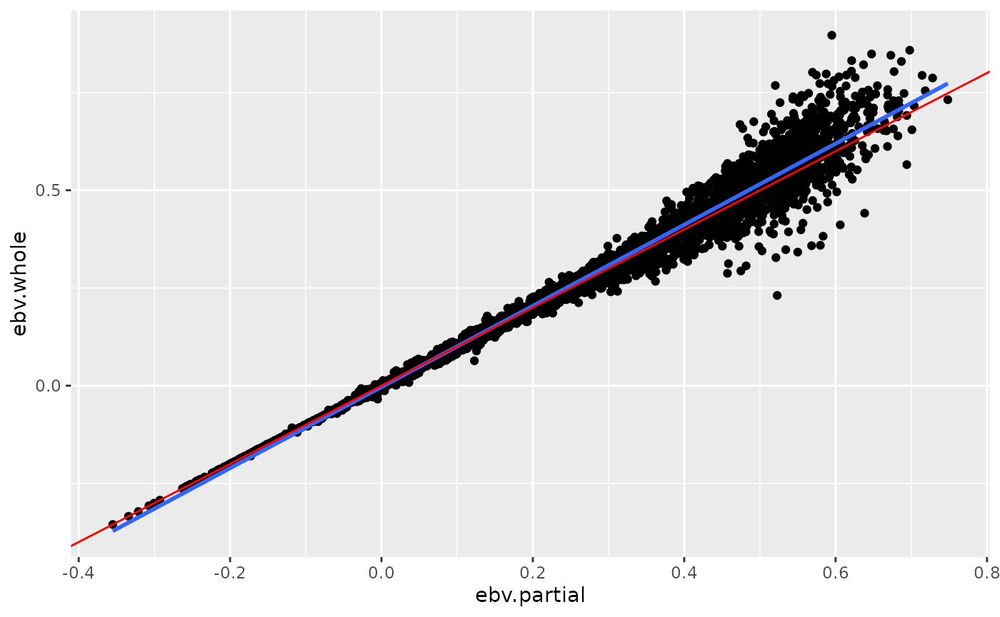

Development of Package qzwslrm
qzwslrm_dev.Rmd
library(qzwslrm)Background
As described in Legarra and Reverter (2018), validation of predicted breeding values is becoming more and more important. Their work uses a cross-validation based approach using results of successive genetic evaluations. These results consist of \(\hat{u}_p\) and \(\hat{u}_w\) which are vectors of the same length and contain predicted breeding values based on “partial” (\(p\)) and “whole” (\(w\)) data, respectively.
Cross-Validation Statistics
The following statistics are computed based on the input \(\hat{u}_p\) and \(\hat{u}_w\)
- bias: \(\overline{\hat{u}_p} - \overline{\hat{u}_w}\)
- regression of whole on partial: \(b_{w,p} = \frac{cov(\hat{u}_w,\hat{u}_p)}{var(\hat{u}_p)}\)
- correlation between whole and partial: \(r_{w,p} = \frac{cov(\hat{u}_w,\hat{u}_p)}{\sqrt{var(\hat{u}_p)var(\hat{u}_w)}}\)
- regression of partial on whole: \(b_{p,w} = \frac{cov(\hat{u}_w,\hat{u}_p)}{var(\hat{u}_w)}\)
Example Data
As shown in https://fbzwsqualitasag.github.io/qzwslrm/articles/qzwslrm_ebv_mix99.html, example data are prepared to run the most basic validation statistics. The example data consists of two results files from MiX99 containing predicted breeding values. The first result file contains EBV predicted based on a complete dataset.
(s_ebv_path_whole <- qzwslrm_example_solani("whole"))
#> [1] "/tmp/RtmpQ6Sl2w/temp_libpath1e0d2c67f2/qzwslrm/extdata/mix99/whole_data/Solani"The second result file contains EBV predicted for the same animals but based on a partial dataset. For our example, the phenotypic observations of all animals from the latest generation were set to missing (NA).
(s_ebv_path_partial <- qzwslrm_example_solani("partial"))
#> [1] "/tmp/RtmpQ6Sl2w/temp_libpath1e0d2c67f2/qzwslrm/extdata/mix99/partial_data/Solani"These files can be read using the function
read_solani()
(tbl_solani_whole <- readr_solani(ps_path = s_ebv_path_whole))
#> Warning: The following named parsers don't match the column names: nprg
#> Warning: 3844 parsing failures.
#> row col expected actual file
#> 1 -- 4 columns 5 columns '/tmp/RtmpQ6Sl2w/temp_libpath1e0d2c67f2/qzwslrm/extdata/mix99/whole_data/Solani'
#> 2 -- 4 columns 5 columns '/tmp/RtmpQ6Sl2w/temp_libpath1e0d2c67f2/qzwslrm/extdata/mix99/whole_data/Solani'
#> 3 -- 4 columns 5 columns '/tmp/RtmpQ6Sl2w/temp_libpath1e0d2c67f2/qzwslrm/extdata/mix99/whole_data/Solani'
#> 4 -- 4 columns 5 columns '/tmp/RtmpQ6Sl2w/temp_libpath1e0d2c67f2/qzwslrm/extdata/mix99/whole_data/Solani'
#> 6 -- 4 columns 5 columns '/tmp/RtmpQ6Sl2w/temp_libpath1e0d2c67f2/qzwslrm/extdata/mix99/whole_data/Solani'
#> ... ... ......... ......... ................................................................................
#> See problems(...) for more details.
#> # A tibble: 4,995 × 4
#> animal nrprg trait ebv
#> <int> <dbl> <int> <dbl>
#> 1 1 10 1 -0.214
#> 2 2 30 1 0.110
#> 3 3 90 1 0.485
#> 4 4 10 1 -0.154
#> 5 5 20 1 0.0766
#> 6 6 20 1 -0.135
#> 7 7 20 1 -0.0928
#> 8 8 10 1 -0.00596
#> 9 9 10 1 -0.0130
#> 10 10 60 1 0.181
#> # … with 4,985 more rowsThe same can be done with the partial data
(tbl_solani_partial <- readr_solani(ps_path = s_ebv_path_partial))
#> Warning: The following named parsers don't match the column names: nprg
#> Warning: 3839 parsing failures.
#> row col expected actual file
#> 1 -- 4 columns 5 columns '/tmp/RtmpQ6Sl2w/temp_libpath1e0d2c67f2/qzwslrm/extdata/mix99/partial_data/Solani'
#> 2 -- 4 columns 5 columns '/tmp/RtmpQ6Sl2w/temp_libpath1e0d2c67f2/qzwslrm/extdata/mix99/partial_data/Solani'
#> 3 -- 4 columns 5 columns '/tmp/RtmpQ6Sl2w/temp_libpath1e0d2c67f2/qzwslrm/extdata/mix99/partial_data/Solani'
#> 4 -- 4 columns 5 columns '/tmp/RtmpQ6Sl2w/temp_libpath1e0d2c67f2/qzwslrm/extdata/mix99/partial_data/Solani'
#> 6 -- 4 columns 5 columns '/tmp/RtmpQ6Sl2w/temp_libpath1e0d2c67f2/qzwslrm/extdata/mix99/partial_data/Solani'
#> ... ... ......... ......... ..................................................................................
#> See problems(...) for more details.
#> # A tibble: 4,995 × 4
#> animal nrprg trait ebv
#> <int> <dbl> <int> <dbl>
#> 1 1 10 1 -0.215
#> 2 2 30 1 0.129
#> 3 3 90 1 0.463
#> 4 4 10 1 -0.154
#> 5 5 20 1 0.0779
#> 6 6 20 1 -0.136
#> 7 7 20 1 -0.0913
#> 8 8 10 1 -0.00620
#> 9 9 10 1 -0.0198
#> 10 10 60 1 0.170
#> # … with 4,985 more rowsValidation
For the validation only the EBV vectors from the full and the partial data are required. Hence the validation function only needs the two vectors as input.
(l_val_result <- val_ebv_lrm(pvec_ebv_partial = tbl_solani_partial$ebv,
pvec_ebv_whole = tbl_solani_whole$ebv))
#> $bias
#> [1] -0.006104794
#>
#> $reg_wop
#> [1] 1.037712
#>
#> $cor_wp
#> [1] 0.987303
#>
#> $reg_pow
#> [1] 0.9393427Other Input Formats
For reasons of flexibility, EBV can be read from files having a number of different formats such as ‘csv’, ‘csv2’, ‘delim’ or ‘table’. For testing purposes different input files are produced and stored inside of this package
# csv
s_pkg_input_dir <- file.path(here::here(), "inst", "extdata", "ebvinput")
s_csv_input_path <- file.path(s_pkg_input_dir, "ebv_input.csv")
readr::write_csv(tbl_solani_partial, file = s_csv_input_path)
# csv2
s_csv2_input_path <- file.path(s_pkg_input_dir, "ebv_input.csv2")
readr::write_csv(tbl_solani_partial, file = s_csv2_input_path)
# delim - .txt
s_delim_input_path <- file.path(s_pkg_input_dir, "ebv_input.txt")
readr::write_delim(tbl_solani_partial, file = s_delim_input_path, delim = " ")The input files included in the package can be obtained and read via
sexdf_csv <- qzwslrm_example_input("csv")
tbl_ebv_csv <- readr_ebv(ps_path = sexdf_csv, ps_format = "csv",
ps_animal_col_name = "animal", ps_ebv_col_name = "ebv")
#> Rows: 4995 Columns: 4
#> ── Column specification ────────────────────────────────────────────────────────
#> Delimiter: ","
#> dbl (4): animal, nrprg, trait, ebv
#>
#> ℹ Use `spec()` to retrieve the full column specification for this data.
#> ℹ Specify the column types or set `show_col_types = FALSE` to quiet this message.
tbl_ebv_csv
#> # A tibble: 4,995 × 2
#> animal ebv
#> <dbl> <dbl>
#> 1 1 -0.215
#> 2 2 0.129
#> 3 3 0.463
#> 4 4 -0.154
#> 5 5 0.0779
#> 6 6 -0.136
#> 7 7 -0.0913
#> 8 8 -0.00620
#> 9 9 -0.0198
#> 10 10 0.170
#> # … with 4,985 more rowsTesting the input format “table”
sexdf_delim <- qzwslrm_example_input(ps_data_format = "delim")
tbl_ebv_table <- readr_ebv(ps_path = sexdf_delim, ps_format = "table",
ps_animal_col_name = "animal", ps_ebv_col_name = "ebv")
#>
#> ── Column specification ────────────────────────────────────────────────────────
#> cols(
#> animal = col_double(),
#> nrprg = col_double(),
#> trait = col_double(),
#> ebv = col_double()
#> )
tbl_ebv_table
#> # A tibble: 4,995 × 2
#> animal ebv
#> <dbl> <dbl>
#> 1 1 -0.215
#> 2 2 0.129
#> 3 3 0.463
#> 4 4 -0.154
#> 5 5 0.0779
#> 6 6 -0.136
#> 7 7 -0.0913
#> 8 8 -0.00620
#> 9 9 -0.0198
#> 10 10 0.170
#> # … with 4,985 more rowsThe generic function readr_ebv() for reading ebv from
input files can read data from files with different formats.
Furthermore, the input files can contain more information than just EBV.
But the result of the reader function is always a tibble with two
columns. The first column contains the animal IDs and the second the EBV
of the animal.
Summary Output
The output of the validation function is formatted using a summary
function summary_lrm().
tbl_ebv_whole <- readr_ebv(ps_path = qzwslrm_example_solani("whole"), ps_format = "table",
pn_ebv_col_idx = 4)
#>
#> ── Column specification ────────────────────────────────────────────────────────
#> cols(
#> X1 = col_double(),
#> X2 = col_double(),
#> X3 = col_double(),
#> X4 = col_double(),
#> X5 = col_logical()
#> )
#> Warning: 1151 parsing failures.
#> row col expected actual file
#> 5 -- 5 columns 4 columns '/tmp/RtmpQ6Sl2w/temp_libpath1e0d2c67f2/qzwslrm/extdata/mix99/whole_data/Solani'
#> 7 -- 5 columns 4 columns '/tmp/RtmpQ6Sl2w/temp_libpath1e0d2c67f2/qzwslrm/extdata/mix99/whole_data/Solani'
#> 8 -- 5 columns 4 columns '/tmp/RtmpQ6Sl2w/temp_libpath1e0d2c67f2/qzwslrm/extdata/mix99/whole_data/Solani'
#> 9 -- 5 columns 4 columns '/tmp/RtmpQ6Sl2w/temp_libpath1e0d2c67f2/qzwslrm/extdata/mix99/whole_data/Solani'
#> 14 -- 5 columns 4 columns '/tmp/RtmpQ6Sl2w/temp_libpath1e0d2c67f2/qzwslrm/extdata/mix99/whole_data/Solani'
#> ... ... ......... ......... ................................................................................
#> See problems(...) for more details.
tbl_ebv_partial <- readr_ebv(ps_path = qzwslrm_example_solani("partial"), ps_format = "table",
pn_ebv_col_idx = 4)
#>
#> ── Column specification ────────────────────────────────────────────────────────
#> cols(
#> X1 = col_double(),
#> X2 = col_double(),
#> X3 = col_double(),
#> X4 = col_double(),
#> X5 = col_logical()
#> )
#> Warning: 1156 parsing failures.
#> row col expected actual file
#> 5 -- 5 columns 4 columns '/tmp/RtmpQ6Sl2w/temp_libpath1e0d2c67f2/qzwslrm/extdata/mix99/partial_data/Solani'
#> 7 -- 5 columns 4 columns '/tmp/RtmpQ6Sl2w/temp_libpath1e0d2c67f2/qzwslrm/extdata/mix99/partial_data/Solani'
#> 8 -- 5 columns 4 columns '/tmp/RtmpQ6Sl2w/temp_libpath1e0d2c67f2/qzwslrm/extdata/mix99/partial_data/Solani'
#> 9 -- 5 columns 4 columns '/tmp/RtmpQ6Sl2w/temp_libpath1e0d2c67f2/qzwslrm/extdata/mix99/partial_data/Solani'
#> 14 -- 5 columns 4 columns '/tmp/RtmpQ6Sl2w/temp_libpath1e0d2c67f2/qzwslrm/extdata/mix99/partial_data/Solani'
#> ... ... ......... ......... ..................................................................................
#> See problems(...) for more details.
summary_lrm(l_val_result <- val_ebv_lrm(pvec_ebv_partial = tbl_ebv_partial$ebv,
pvec_ebv_whole = tbl_ebv_whole$ebv))
#>
#> Bias between partial and whole: -0.0061
#> Regression whole on partial: 1.0377
#> Correlation whole and partial: 0.9873
#> Regression partial on whole: 0.9393Result Tibble
The results can also be converted into a tibble. This can be useful for an output as a table
tbl_ebv_whole <- readr_ebv(ps_path = qzwslrm_example_solani("whole"), ps_format = "table",
pn_ebv_col_idx = 4)
#>
#> ── Column specification ────────────────────────────────────────────────────────
#> cols(
#> X1 = col_double(),
#> X2 = col_double(),
#> X3 = col_double(),
#> X4 = col_double(),
#> X5 = col_logical()
#> )
#> Warning: 1151 parsing failures.
#> row col expected actual file
#> 5 -- 5 columns 4 columns '/tmp/RtmpQ6Sl2w/temp_libpath1e0d2c67f2/qzwslrm/extdata/mix99/whole_data/Solani'
#> 7 -- 5 columns 4 columns '/tmp/RtmpQ6Sl2w/temp_libpath1e0d2c67f2/qzwslrm/extdata/mix99/whole_data/Solani'
#> 8 -- 5 columns 4 columns '/tmp/RtmpQ6Sl2w/temp_libpath1e0d2c67f2/qzwslrm/extdata/mix99/whole_data/Solani'
#> 9 -- 5 columns 4 columns '/tmp/RtmpQ6Sl2w/temp_libpath1e0d2c67f2/qzwslrm/extdata/mix99/whole_data/Solani'
#> 14 -- 5 columns 4 columns '/tmp/RtmpQ6Sl2w/temp_libpath1e0d2c67f2/qzwslrm/extdata/mix99/whole_data/Solani'
#> ... ... ......... ......... ................................................................................
#> See problems(...) for more details.
tbl_ebv_partial <- readr_ebv(ps_path = qzwslrm_example_solani("partial"), ps_format = "table",
pn_ebv_col_idx = 4)
#>
#> ── Column specification ────────────────────────────────────────────────────────
#> cols(
#> X1 = col_double(),
#> X2 = col_double(),
#> X3 = col_double(),
#> X4 = col_double(),
#> X5 = col_logical()
#> )
#> Warning: 1156 parsing failures.
#> row col expected actual file
#> 5 -- 5 columns 4 columns '/tmp/RtmpQ6Sl2w/temp_libpath1e0d2c67f2/qzwslrm/extdata/mix99/partial_data/Solani'
#> 7 -- 5 columns 4 columns '/tmp/RtmpQ6Sl2w/temp_libpath1e0d2c67f2/qzwslrm/extdata/mix99/partial_data/Solani'
#> 8 -- 5 columns 4 columns '/tmp/RtmpQ6Sl2w/temp_libpath1e0d2c67f2/qzwslrm/extdata/mix99/partial_data/Solani'
#> 9 -- 5 columns 4 columns '/tmp/RtmpQ6Sl2w/temp_libpath1e0d2c67f2/qzwslrm/extdata/mix99/partial_data/Solani'
#> 14 -- 5 columns 4 columns '/tmp/RtmpQ6Sl2w/temp_libpath1e0d2c67f2/qzwslrm/extdata/mix99/partial_data/Solani'
#> ... ... ......... ......... ..................................................................................
#> See problems(...) for more details.
tibble_lrm(l_val_result <- val_ebv_lrm(pvec_ebv_partial = tbl_ebv_partial$ebv,
pvec_ebv_whole = tbl_ebv_whole$ebv))
#> # A tibble: 4 × 2
#> `Validation Statistic` Value
#> <chr> <dbl>
#> 1 Bias between partial and whole -0.0061
#> 2 Regression whole on partial 1.04
#> 3 Correlation whole and partial 0.987
#> 4 Regression partial on whole 0.939Scatterplots of EBV from Whole and Partial Data
The function scatterplot_lrm() creates a scatterplot of
the EBV from whole and partial data
tbl_ebv_whole <- readr_ebv(ps_path = qzwslrm_example_solani("whole"), ps_format = "table",
pn_ebv_col_idx = 4)
tbl_ebv_partial <- readr_ebv(ps_path = qzwslrm_example_solani("partial"), ps_format = "table",
pn_ebv_col_idx = 4)
p <- scatterplot_lrm(tbl_ebv_whole, tbl_ebv_partial)
print(p)
The above plot shows a scatterplot of the ebv from whole data and partial data. The blue line is the linear smoothed regression line and the red line is the expected regression line with a slope of \(1\).